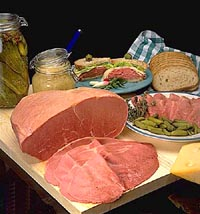
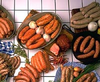

Contribution to Sask.
Agriculture
Value Added
Through Processing
Nutritional Value
of Meat
Meat Consumption
in Canada
Saskatchewan's Meat
Marketing Systems
Primary Processing
of Meat
|
Meat has been part of the human diet since the earliest known people, and remains an important source of protein and energy. Most consumers today are far from the source of meat on the farms where it is produced. Meat, like many other foods, has undergone several steps of processing prior to its appearance on supermarket shelves. Beef, pork, and poultry (chicken and turkeys) are major meat products produced and consumed in Saskatchewan, with lamb a minor part of the meat industry. Saskatchewan exports live cattle and pigs, as well as significant amounts of dressed meat to markets in other provinces, the U.S.A. and other countries. Livestock processing and marketing has evolved from simple systems where consumers often dealt directly with producers who did rudimentary processing on farms, to much more complicated but efficient systems. Primary processors slaughter animals and disassemble the carcass into edible food, hides, fats, and so on for sale in local and sometimes distant markets. The marketing system involves electronic and live auctions, marketing boards and contract arrangements. Efficient transportation, international currency exchange, price guarantees, and futures markets to spread risk are all part of livestock marketing today. |
|

Meat's Contribution to Saskatchewan's Agriculture
Historically, cattle and hogs were raised in the West, with production above local demand processed and consumed in Eastern Canada. Today, the cattle and swine-feeding industries are moving back West. Shipments to Alberta for feeding and slaughter, and to the U.S.A. are now the most important cattle exports from Saskatchewan. Livestock production is important to diversified and sustainable farming systems in Saskatchewan, and processing provides and excellent opportunity to expand local industries and employment.
Value Added Through Processing
The processing of meat, like other food processing, adds
value to the product, and jobs and dollars to local
economies. Livestock's contribution to the provincial
economy could be increased substantially by more processing of meat locally, rather than the export of live animals. An inconsistent supply of animals within Saskatchewan and small local demand has limited meat processing in the Province. Meat packing plants are located mainly in Eastern Canada and, lately, in Alberta and the U.S.A. Putting into carcass form one million cattle and one million hogs each year in Saskatchewan requires at least 300 skilled workers - more if processed meats and specialty products were included.
Nutritional Value of Meat
Meat is a palatable source of energy and protein, supplying required amino acids that are only partly available from cereal grains. Changes in cattle and swine breeding, grading and the trimming of carcasses has reduced the fat content of beef and pork. For example today's beef is 50 % leaner (and 34% lower in calories than it was 15 years ago). What does lean mean? To qualify as a lean cut, beef must be less than 10 percent fat. Very lean is under 5 percent fat.
 Meat Consumption in Canada
Years ago, Canadian's ate more pork than beef, possibly
because almost all farms had pigs, and cured pork (bacon and ham) could be stored longer than uncured meat. Beginning in the 1940s, increasingly affluent consumers preferred beef, and its consumption increased to 45 kilograms per person per year in the 1970s. The past decade saw a decrease in beef consumption caused by strong price competition from pork and poultry. With specialized production methods, improved breeding and disease control, and better marketing those meats have increased their share of the market. Poultry, especially broiler chickens, is ideally suited to the convenience food market.
Saskatchewan's Meat Marketing Systems Cattle and sheep are sold through an open market where supply and demand determine price. Saskatchewan participates in a National Check-Off (monetary deduction on the sale of cattle) for beef producers. Beginning Aug. 1, 1998, a $2 check-off, combining the provincial $1 check-off (which was already being collected) and a $1 national deduction is collected at the point of sale by auction markets, dealers and packing plants, or by livestock inspectors when animals are shipped for export. In Canada, prices for chickens and turkeys are based on the cost of production, and set by marketing boards which also regulate production quotas. Pigs are sold through a central marketing desk, which provides a weekly pool price to producers in Saskatchewan. Different cuts of beef, such as rib, loin, chuck and steak, result in different flavours and qualities of meat, presenting consumers with an appetizing array of choices.(A.K. Photos)
Rolled picnic hams emerge from the smoke house, cured and ready for packaging. Smoking imparts flavour and improves keeping quality.(Intercontinental Packers Ltd.)

Primary Processing of Meat Meat cutters trim and prepare meat for wholesale and retail markets, a process requiring many careful, well-trained hands. Wieners are a popular processed meat. Stainless steel equipment, automation and strict adherence to government health regulations ensure that meat is safe to eat. In meat packing plants, every process from slaughtering to packaging is carefully monitored to avoid contamination of the various meat products. If contamination of food is detected the point in the processing chain that it occurred can be rapidly determined and the problem rectified.
Most industries operate a system called Hazard Analysis Critical Control Point (HACCP). This is a preventive system of food control. It involves examining and analysing every stage of a food-related operation to identify and assess hazards. Critical control points are established where monitoring identifies problems which are immediately corrected.
 Sausages are made using trimmings from prime cuts, which are ground and mixed with spices and fillers such as grain or bread. Markets provide consumers with an impressive variety of fresh and processed meats, including beef, poultry and pork. Processed and often pre-cooked meats are sold in special protective packaging, providing convenience, protection from spoilage, and a clear view of the product.
|